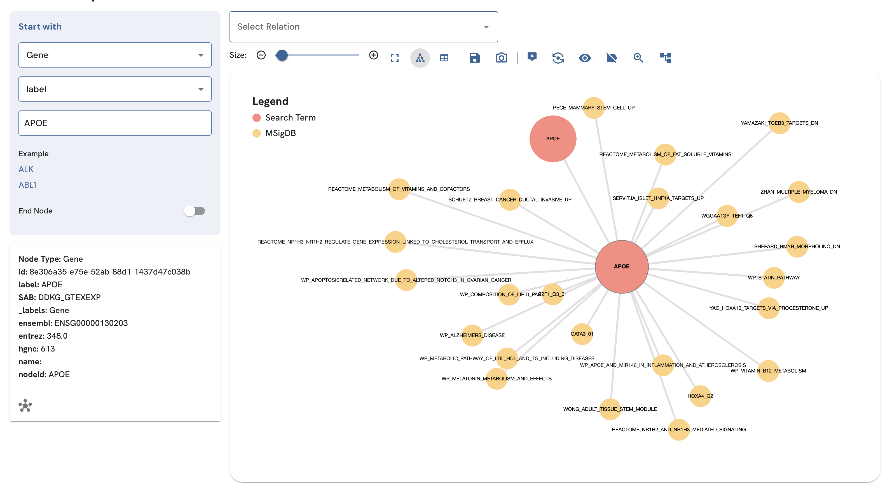

ProKN: Biomedical Knowledge Graph

In the realm of translational research, discovering complex pharmacological relationships is often bottlenecked by disjointed biological databases. The Protein Knowledge Network (ProKN) is an advanced graph architecture designed to map behavioral health phenotypes directly to molecular layers, allowing researchers to uncover insights in days rather than years.
The Challenge
Researchers rely on massive datasets to find drug targets and disease mechanisms. However, when pulling from diverse sources, high-volume data duplication and fragmented structures make analysis nearly impossible. We needed a centralized, highly reliable intelligence hub that eliminated redundancies and standardized over 20,000 drug and protein entities.
The Architecture & Workflow
To build a robust, scalable system, I architected a full ETL (Extract, Transform, Load) pipeline that fed into a graph database:
- Data Ingestion: Extracted complex biological and pharmacological data from highly reliable sources, including Open Targets, ChEMBL, and UniProt.
- Entity Resolution: Engineered a Python-based pipeline utilizing deterministic UUID v5 hashing. This ensured zero-duplication when merging records from disparate databases.
- Graph Modeling: Loaded the cleaned entities and their relationships into a Neo4j graph database, creating a deeply connected web of molecular interactions.
The Business & Clinical Impact
By transforming messy, isolated datasets into a structured knowledge graph, the ProKN system successfully uncovered approximately 10,000 novel drug-protein mechanisms. This architecture significantly expands biological coverage, providing researchers with a trusted, streamlined tool to accelerate clinical insights and drug repurposing efforts.